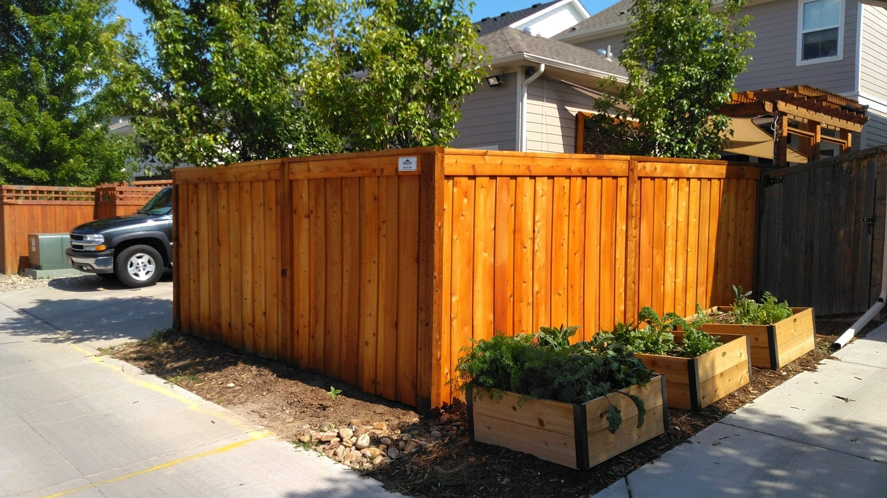
DENVER, COLORADO · LOCALLY OWNED AND OPERATED
Six ways to fencea Denver yard,side by side.
Wood, vinyl, ornamental iron, Trex composite, rail and custom fences for Denver homes, businesses, HOAs and schools. Pick two and read them against each other.
The same five questions, asked of all six materials.
Every sentence in this table is theirs, from their Fence Types page. Open the ones you are choosing between; the rest fold away into narrow strips. Tap a strip to bring it back.
| Question | ||||||
|---|---|---|---|---|---|---|
| Privacy | Full privacy when built solid; picket is open by design. | Full privacy — they list it as one of the material’s properties. | None — it is an open fence. They sell it for the look and the sense of security. | Solid board fence — full privacy. | None by design — they sell it for marking a line without closing the view. | Whatever the design calls for — their custom photos show both solid and open runs. |
| Upkeep | Needs treatment. They name Ready Seal oil stain, applied before or after the fence is built. | No rot, no rust, easy to clean. No painting. | No rot, no rust, no insects. They call decorative metals increasingly maintenance free. | Never needs staining or painting, and never needs sanding. | Split rail: low cost, long lasting. Ranch rail: long-lasting in cedar or vinyl. | Depends on what it is built from. |
| How long it lasts | They call a 15 to 30 year life-span a fair expectation, depending on care. | Manufacturers offer lifetime warranties on the material, they say. | Lifetime warranty, in their list. | Resists termites; will not rot, warp or splinter, they say. | Split rail they call low cost and long lasting; no number given. | Depends on what it is built from. |
| In Colorado | Their own note: in Colorado, due to extreme dryness, cracks on the posts, rails and pickets are to be expected, and suppliers offer no warranty against that. | Their own note: in Colorado, vinyl is only available in white and tan. | They publish no Colorado-specific note for iron. | They publish no Colorado-specific note for Trex. | They publish no Colorado-specific note for rail. | They publish no Colorado-specific note for custom work. |
| Worth knowing | Only stainless steel nails or screws prevent bleeding. | They describe today’s vinyl as similar to the material used in vinyl windows. | Customisable using finials and decorative accessories; finishes they call environmentally friendly. | More expensive up front, lower repair costs over time. Limited customisation aside from post caps and colour. | Split rail takes welded wire but they call it not ideal; ranch rail takes welded wire well. A typical ranch rail is two, three or four rails on 4×6 or 6×6 cedar posts with nominal 2×6 rails. | Whether you were inspired by a custom design or want to create a unique look, they collaborate on materials and design. |
Their process, in three steps.
01
Contact their team
They talk measurements, style, and any special needs you have.
02
Get a quote
They schedule a site visit and come to you to give a custom quote.
03
Feel safe and secure
After demo and installation you have the fence.
Now the part their form asks for and does not help with.
Their quote form has one required free-text box: “Tell us about your project?”. Answer these six and the box writes itself.
Your project, in plain English.
Copy this, then paste it into their own form or read it over the phone. This page has no submission endpoint: nothing leaves your browser.
Measurements are approximate and are confirmed on site.
Fences standing around Denver.
Their own photographs. The last two are from the middle of a build — those are in their media library and on none of their public pages.
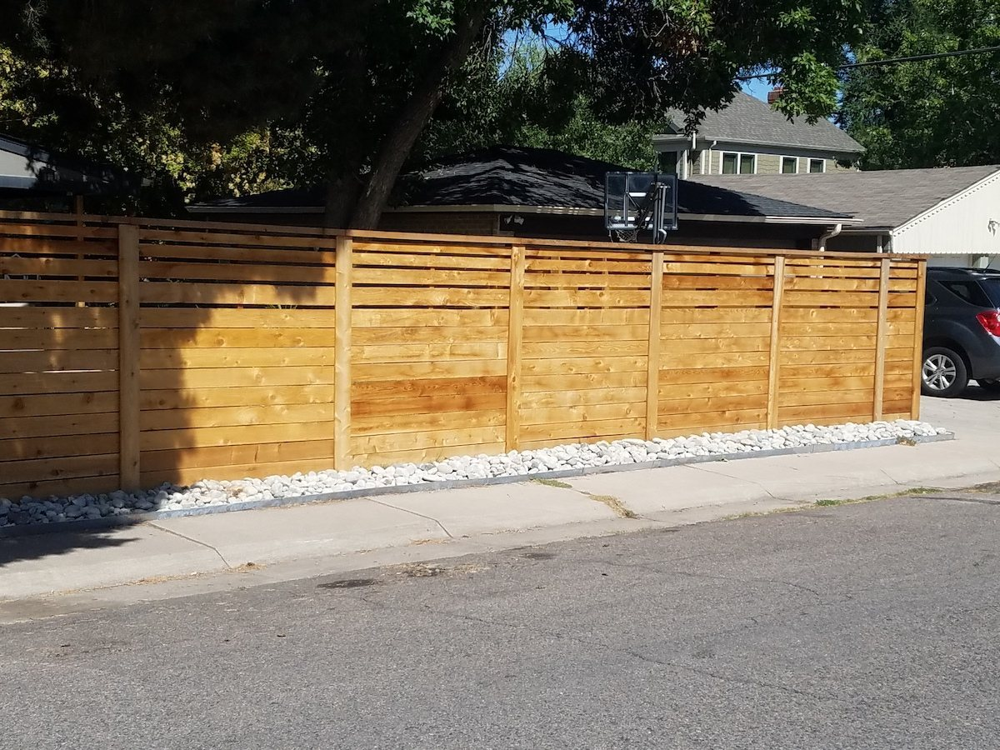
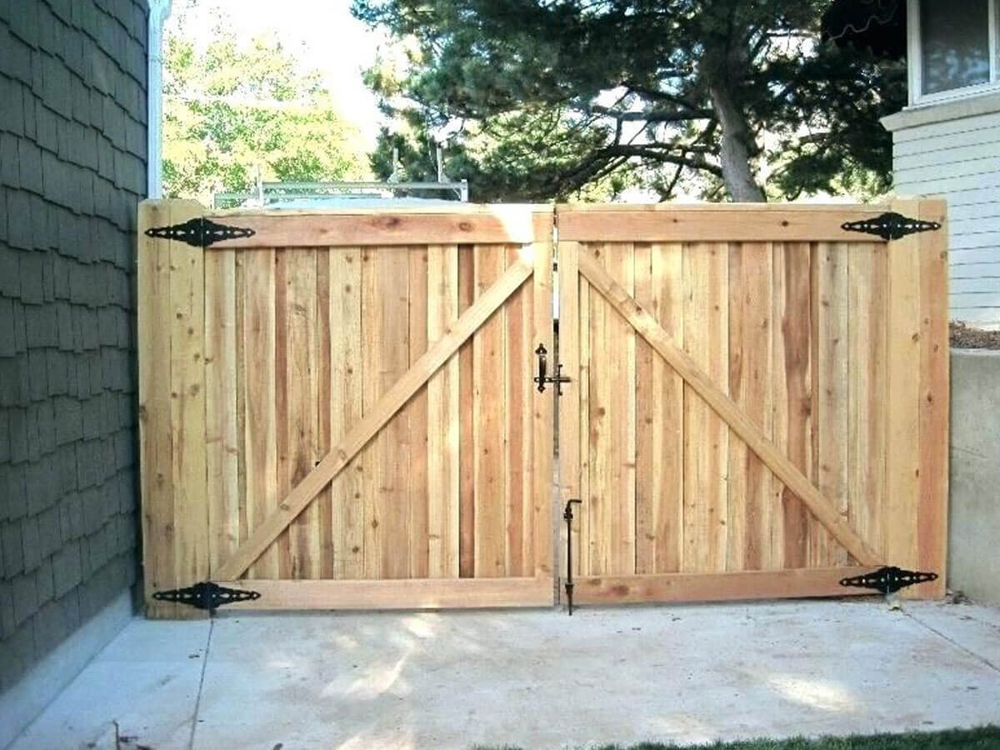
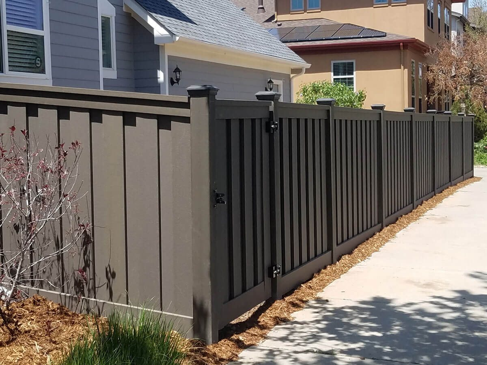
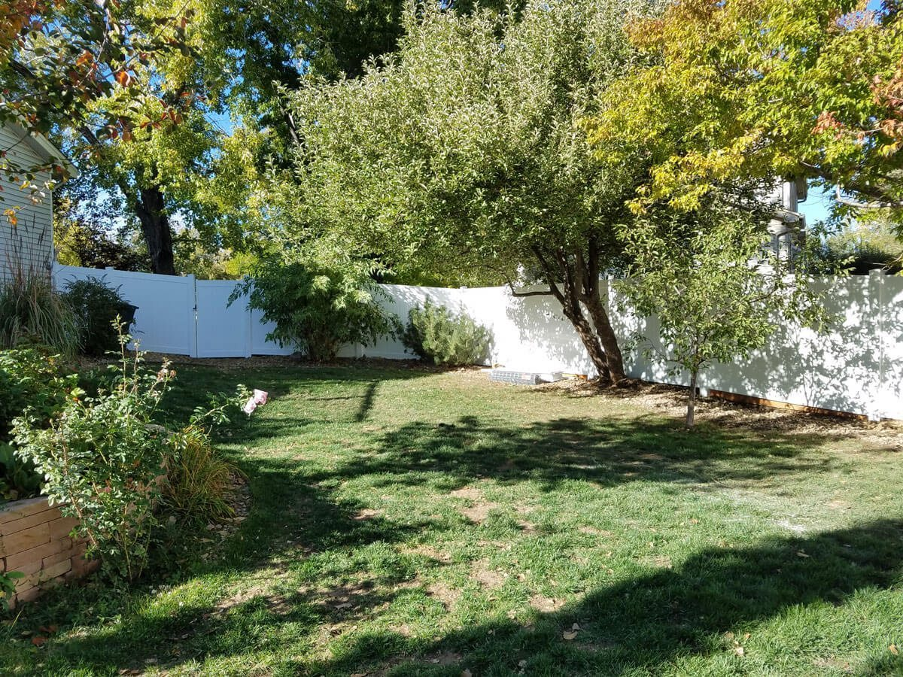
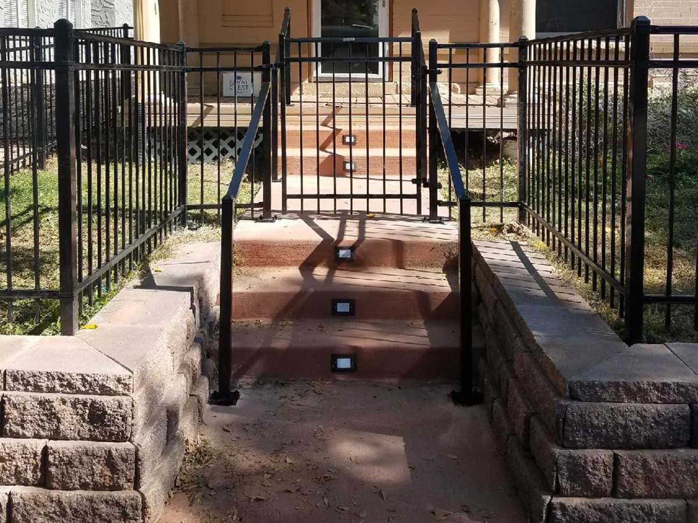
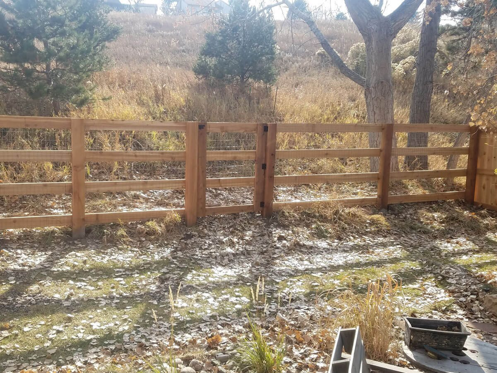
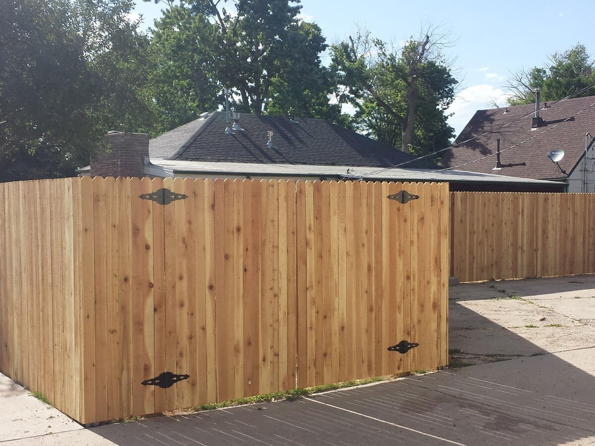
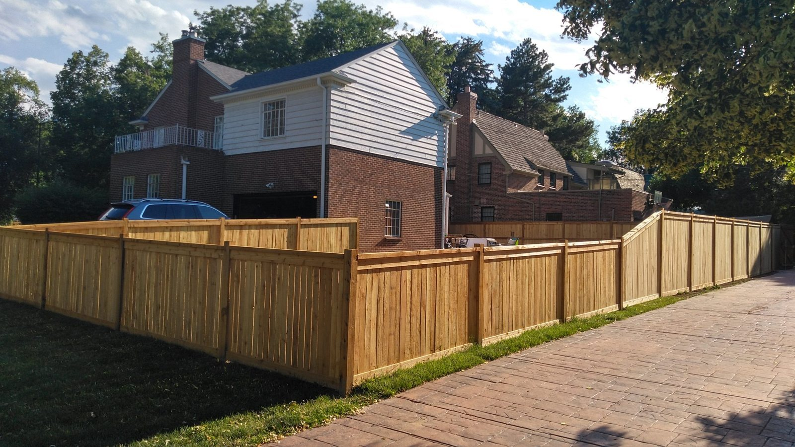
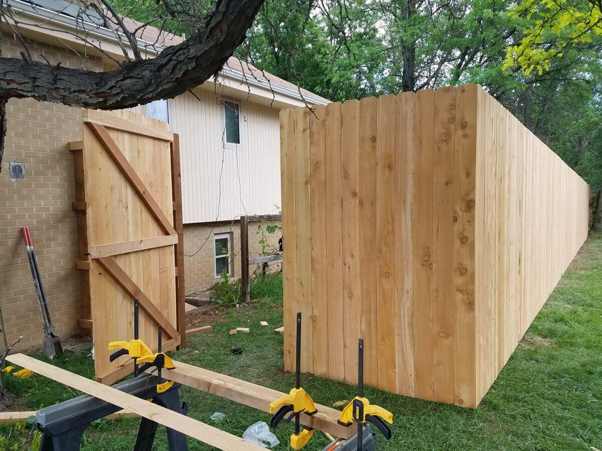
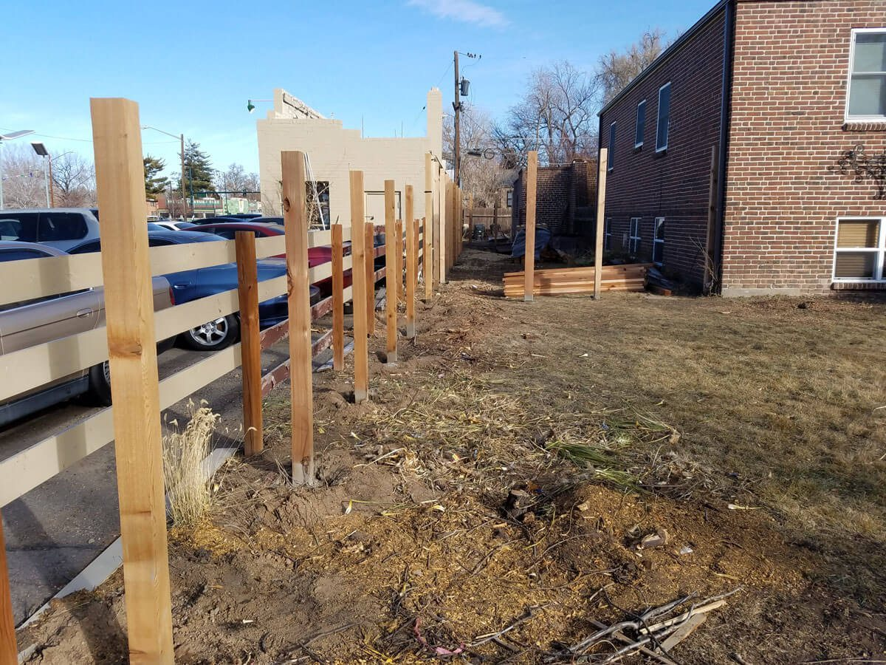
Three customers, in their own words.
All three are published on their homepage. The company does not date them, so neither do we.
“If you would like to be treated with dignity and respect, hire Roman. You will wish he could do all the projects you need done because he cares that you are happy with the final product. From the initial meeting to receive a bid, Roman was different from all the others. He did not have an attitude when I asked questions during the bid or while the actual install was going on.”
“We were in need of an 8′ fence along our 90′ side yard, with two 8′ gates for entry at the front and back. Roman showed up on time to take a look and provide a proposal. We had 9 stumps that they had to work around for the posts. No problem. Uneven ground, no problem. The team at Denver Fence Specialists had the entire job done in less than 3 days, and the fence is beautiful.”
“Roman, owner and crews are honest, hard working and they really care about their clients. They have plenty of expertise and use high quality materials and very organized. Sometimes they are slammed with jobs, so you might have to wait to get on schedule, but well worth it.”
Good to know.
- Over 500 fences
- Their About page, last edited in August 2020, says: “With over 500 fences completed in the last five years”. We quote it with that date because the sentence counts from 2020, not from today.
- Locally owned
- Their words: locally-owned and operated, providing Denver Metro installation and repairs on traditional or custom fences.
- Reply window
- Their quote form says they will contact you with next steps within 24 to 48 hours, and asks for patience.
- HOA, commercial and schools
- Their Commercial & HOA page: no project too large, experience with multi-person projects and detailed specs, and they work with you on volume discounts and timelines.
- Suppliers they name
- Their Partners page shows Trex, Ameristar, Master Halco, Cedar Supply and Rocky Mountain Forest Products. The page says they only work with the best suppliers and materials.
- Awards they show
- Two HomeAdvisor service badges, and Angie’s List Super Service Awards for 2017, 2018 and 2019, on their homepage. 2019 is the most recent award they display.
Talking to them.
Their form promises a reply within 24 to 48 hours. The second phone number below is printed on their homepage in white on a white background, so no visitor has ever seen it.